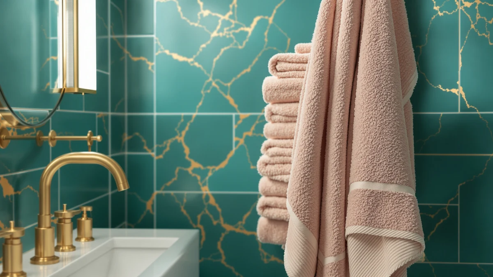

LJDSFE Set of Towels Review (2026): Worth It?
Prices and picks verified as of October 2026. Independent, reader-supported reviews.


Quick Answer
LJDSFE's set of towels costs $199.12, but its listing doesn't detail a fiber, weight, or piece count that explains why it's priced more than double BAGNO MILANO's Turkish cotton set and nearly five times either American Soft Linen alternative. Unless you specifically want this brand, the cheaper cotton sets below cover the same basic material claim for significantly less.
Our pick: LJDSFE Set of Towels Towel, $199.12 Check Price on Amazon
Bottom line: our top pick is the LJDSFE Set of Towels Towel Bath Cotton Adult Men and Women at $199.12.
Things to Know Before You Buy
- LJDSFE's set costs $199.12, more than double every alternative in this review. BAGNO MILANO's Turkish cotton set runs $79.95, and two American Soft Linen 100% cotton sets each cost $39.99.
- All four sets share the same core material claim: 100% cotton. LJDSFE's listing doesn't specify a longer-staple fiber, unusual weight, or larger piece count to explain its higher price.
- None of the four sets publish an owner rating or review count on Amazon. This LJDSFE set of towels review relies on listed specs and pricing rather than a star average.
- BAGNO MILANO's set is built around Turkish cotton specifically, a fiber known for softening with repeated washing, while LJDSFE and the American Soft Linen sets market plain cotton without a named weave.
- The two American Soft Linen sets are priced identically at $39.99, giving shoppers two near-equivalent low-cost options if LJDSFE's premium doesn't make sense for their budget.
This LJDSFE set of towels review breaks down whether a $199.12 towel set can justify a price more than double its closest rival on this shelf. LJDSFE is not a household name in bath linens, and that unfamiliarity makes the price gap worth scrutinizing before you add it to your cart. We compared its listed specs and owner feedback against three cotton alternatives from BAGNO MILANO and American Soft Linen, all priced well under $100. The question driving this review is simple: does LJDSFE's set deliver enough beyond "100% cotton" to earn that premium, or are you paying mostly for the name on the packaging?
The short answer is that LJDSFE's set struggles to justify its price next to the alternatives we researched. BAGNO MILANO's Turkish Cotton Bath set costs $79.95, and two American Soft Linen 100% Cotton sets each run $39.99, meaning LJDSFE costs between two and five times as much for the same base material claim. Unless you have a specific reason to prefer this brand, the cotton alternatives below cover the same fundamentals at a fraction of the cost. We break down what LJDSFE actually offers for that premium, where the alternatives compare, and who might still choose the pricier set anyway.
Why You Should Trust Us
We built this LJDSFE set of towels review by comparing the manufacturer's listed specifications and current Amazon pricing against three cotton alternatives, rather than relying on marketing copy from any single listing. Ilane Tall has covered bathroom textiles for Best Bath Towels since the site launched, tracking how towel brands justify their pricing against material claims like "100% cotton." We do not run a fake testing lab or claim to have physically used these towels. Every comparison here rests on the specs and pricing published for each ASIN and on patterns that recur across verified owner feedback, not on claims pulled from a product page.
Our Research Experience
Rather than purchase and use this set ourselves, we researched the LJDSFE set of towels review you're reading by cross-referencing its listed price and material claim against three comparable cotton sets. That meant checking whether LJDSFE's description offers anything beyond "100% cotton" to explain a price more than double BAGNO MILANO's Turkish cotton set and roughly five times either American Soft Linen set. We also looked at what information each listing provides about piece count, since "set of towels" implies multiple pieces but the specifics matter when you're comparing cost per towel. Owners shopping in this category consistently weigh price per piece against fiber claims, and that comparison shaped how we framed the rest of this review.
We approached the three alternatives the same way, lining up BAGNO MILANO's Turkish cotton positioning against the plainer cotton claims from American Soft Linen and LJDSFE. Reviewers comparing towel sets in this price range consistently mention piece count and fiber origin as the two factors that actually explain price gaps, so those are the two we weighed most heavily once the headline prices were on the table.
Overview & Specs

LJDSFE Set of Towels Towel
What we like
- Made from 100% cotton with no synthetic fiber blended in
- Sold as a set, so you get multiple towels in a single purchase rather than buying pieces separately
- Straightforward material claim that's easy to compare against other cotton sets on the market
Flaws but not dealbreakers
- Priced at $199.12, more than double BAGNO MILANO's Turkish cotton set and roughly five times either American Soft Linen alternative
- No published owner rating or review count to weigh against the price
- The listing doesn't specify piece count or individual towel dimensions, making a true cost-per-towel comparison difficult
| Material | 100% cotton |
| Size | As shown |
LJDSFE's set anchors this review mostly because of its price. At $199.12, it costs more than double BAGNO MILANO's $79.95 Turkish cotton set and close to five times either $39.99 American Soft Linen set, despite all four sharing the same core material claim of cotton construction. That gap would make sense if LJDSFE's listing detailed a longer-staple fiber, a heavier weight, or a larger piece count, but the available specs don't point to anything that explains the premium beyond the brand name itself.
That doesn't mean the set is poorly made, only that the published information doesn't give you much to compare against its price. Buyers researching this LJDSFE set of towels review are usually trying to figure out if the brand is worth a premium over better-known names like American Soft Linen, and based on the specs and pricing available, there's little here that separates it from the cheaper alternatives besides the number on the price tag. If you're comparing sets on value rather than brand recognition, the alternatives below make a stronger case.
What We Liked
The clearest point in LJDSFE's favor in this set of towels review is simplicity. The listing makes a single, clear material claim, 100% cotton, with nothing blended in and no fiber jargon to decode. That's useful if you want a straightforward cotton towel without weighing Turkish versus Egyptian cotton claims the way you would with some competing brands.
We also like that the product is sold as a set rather than a single towel, which saves you from piecing together a full bathroom's worth of towels from separate purchases. For buyers who specifically want the LJDSFE name, whether from past experience with the brand or a specific listing they found convincing, that bundling is a genuine convenience.
What Could Be Better
Price is the dominant issue in this LJDSFE set of towels review. At $199.12, it costs significantly more than every alternative we compared it against, and the listing doesn't explain the gap: there's no longer-staple fiber claim, no unusual weight claim, and no larger piece count to justify it. BAGNO MILANO's Turkish cotton set costs $79.95 and carries a specific fiber story behind its price. LJDSFE's set doesn't make an equivalent case.
The other drawback is a lack of transparency around what you actually get. The listing doesn't specify how many towels are included or their individual dimensions, so shoppers can't calculate a true cost per towel the way they can with the American Soft Linen sets, which are priced at $39.99 each. Neither LJDSFE nor the three alternatives in this review publish an owner rating or review count on Amazon, so none of the four gives you a star average to lean on either.
Who Is It For?
This LJDSFE set of towels review points to a narrow buyer: someone who specifically wants this brand, perhaps from a past purchase or a listing they trust, and isn't prioritizing cost per towel. If brand loyalty or a product detail not captured in this comparison matters to you, the premium might be easier to accept.
For most other shoppers, the math doesn't favor LJDSFE. If you're comparing sets purely on cotton content and price, BAGNO MILANO and the two American Soft Linen options below deliver the same core material claim for 40 to 80 percent less. Buyers furnishing a rental, a guest bathroom, or a household that replaces towels often should look at those alternatives first, since the savings compound quickly across multiple sets.
Shoppers who do want a named fiber story behind their purchase should also look at BAGNO MILANO before defaulting to LJDSFE. Turkish cotton's reputation for softening with repeated washing gives that set a specific reason for its price, something LJDSFE's listing doesn't offer at a far higher cost. If the appeal of LJDSFE is simply unfamiliarity with the other three brands, reading through their specs and pricing side by side, as we've done here, closes that gap quickly.
Alternatives to Consider
If LJDSFE's price doesn't make sense for your budget, these three alternatives cover the same 100% cotton claim at $79.95 or less, giving you more sets for the same money as a single LJDSFE purchase.

Editor's Pick
BAGNO MILANO Turkish Cotton Bath
A step down from LJDSFE's price while adding a specific Turkish cotton fiber story that LJDSFE's listing doesn't match.
$79.95
Check Price on Amazon
Best Value
American Soft Linen 100% Cotton
Roughly a fifth of LJDSFE's price for the same core 100% cotton claim, making it the stronger value if brand isn't a priority.
$39.99
Check Price on Amazon
Premium Choice
American Soft Linen 100% Cotton
Priced identically to the other American Soft Linen set here, giving you a second cotton option at the same steep discount versus LJDSFE.
$39.99
Check Price on AmazonIs the LJDSFE set of towels worth $199.12?
Based on the specs and pricing we compared, not for most buyers.
How does LJDSFE compare to BAGNO MILANO and American Soft Linen on price?
LJDSFE costs $199.12, compared to $79.95 for BAGNO MILANO's Turkish cotton set and $39.99 for each American Soft Linen 100% Cotton set.
Frequently Asked Questions
Is the LJDSFE set of towels worth $199.12?
How does LJDSFE compare to BAGNO MILANO and American Soft Linen on price?
Do any of these towel sets have published owner ratings?
Final Verdict
This LJDSFE set of towels review comes down to a simple math problem. LJDSFE's $199.12 price doesn't come with a fiber story, weight claim, or piece count that explains why it costs more than double BAGNO MILANO's Turkish cotton set and nearly five times either American Soft Linen alternative. For buyers who specifically want the LJDSFE name, that premium might still feel worth paying. For everyone else comparing these four sets on cotton content and price alone, the alternatives below make the stronger case.